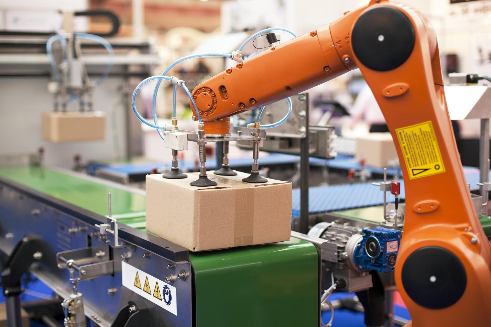

Automação Industrial


O TÉCNICO EM AUTOMAÇÃO INDUSTRIAL é o profissional que realiza integração de sistemas de automação
composto por redes industriais, instrumentação, sistemas robotizados, automatização hidráulica e
pneumática, sistemas de controle eletromecânicos e sistemas embarcados. Emprega programas de computação
para supervisão e controle da produção integrado às redes industriais. Realiza manutenção nos elementos
utilizados para automação, medição e controle. Projeta, propõe, planeja e executa instalação dos
equipamentos utilizados nos sistemas de automação. Realiza manutenção em sistemas de automação
industrial. Realiza medições, testes e calibrações de equipamentos industriais elétricos e eletrônicos.
Executa procedimentos de controle de qualidade, segurança e gestão.